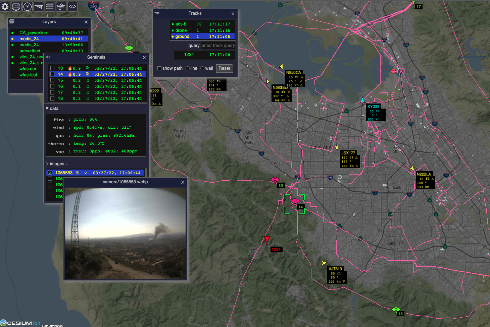

Vision
The central goal of ODIN-fire is to enable efficient integration of various wildland fire related data sources into task- and stakeholder- specific applications.

Such data sources predominantly come from existing services on the internet (e.g. weather and satellite data, imported from so called "edge servers") but can also include dynamic (realtime) data that is generated within the the stakeholder network (such as tracking information).
Since ODIN-fire applications are inherently distributed we call the machines running them ODIN Nodes. Those can be dedicated or shared machines - ODIN-fire can run on all major operating systems and hardware architectures, on servers or desktops. This is important so that ODIN nodes can be deployed within the stakeholder network, to make applications robust against (temporary) loss of internet connectivity and to avoid that sensitive data such as tracking information has to leave the stakeholder premises.
ODIN-fire applications might often just visualize the integrated data in a user-controlled way. This in itself can already be a significant improvement if it allows the user to see the right information in the right context, avoiding the "too much and not enough" effect or the need to frequently switch between different web pages. ODIN-fire's primary way to visualize data is through a browser so that only one ODIN node has to run within the stakeholder network and users can access the data without having to install anything on their devices. This is not the only way to view data. ODIN-fire applications can also connect to apps running on mobile devices or run on local desktops (i.e. without running a web server).

ODIN-fire applications can do much more. The imported data can be automatically processed. This can include potential functions to
- automatically monitor data for alert conditions
- combine different sensor channels to reduce false positives/negatives
- provide alternative visualization (e.g. dynamic wind fields)
- send reports to other agencies/organizations (containment, fire perimeters etc.)

Since ODIN-fire is built on top of RACE it supports communication between ODIN nodes. This allows to map organizational structures such as the wildland fire Incident Command System (ICS) to a network of ODIN nodes with different, role-specific applications.